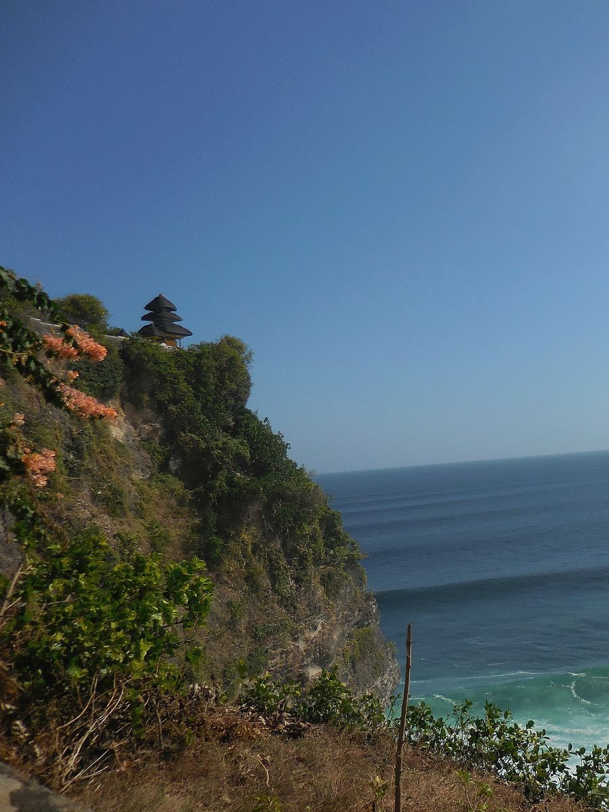
01 / 2 ночи
Соль
Баланган и Улувату
Океан, горизонт и первые практики после перелёта. Время восстановить сон, почувствовать землю под ногами и войти в общий ритм без спешки.
12–22 февраля 2027 · 11 дней / 10 ночей
Авторское путешествие-практика по Бали и Гили Мено
Между движением и звуком
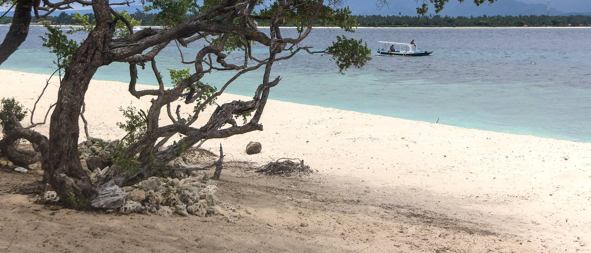
Манифест
Практика здесь встроена в маршрут. Утром мы возвращаем внимание к телу через движение и дыхание. Днём знакомимся с островом, водой, храмами и людьми. Вечером замедляемся в звуке, йога-нидре и бережном контакте.
За 11 дней меняется не только пейзаж, но и качество присутствия в нём.
Это не набор экскурсий и не расписание отдельных занятий. Четыре среды идут одна за другой: океан помогает замедлиться после дороги, Убуд даёт основную глубину, Гили Мено освобождает место для тишины, Санур возвращает привычный ритм перед вылетом.
Маршрут

01 / 2 ночи
Баланган и Улувату
Океан, горизонт и первые практики после перелёта. Время восстановить сон, почувствовать землю под ногами и войти в общий ритм без спешки.
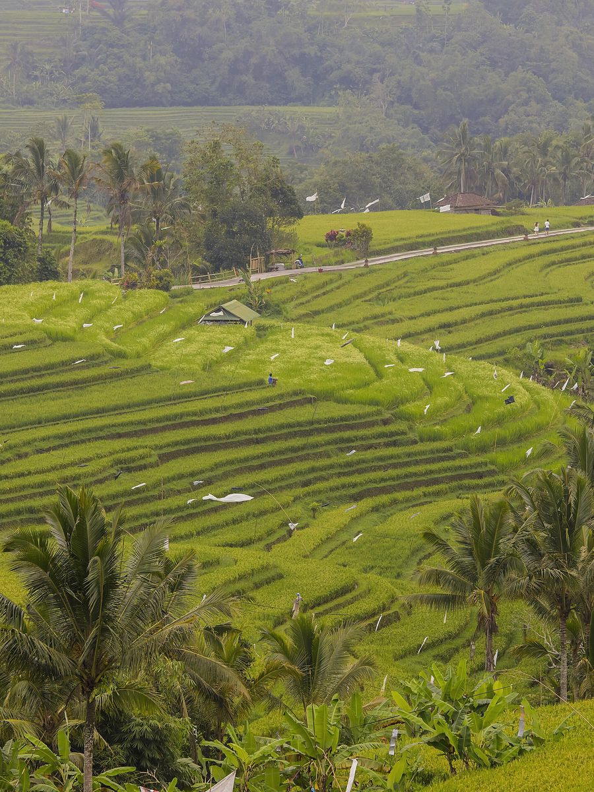
02 / 5 ночей
Убуд
Главная часть путешествия: цигун, йога, лаборатории контакта, мелукат, рассвет на Батуре, горячие источники, травяные бани, Джатилувих и Батукару.
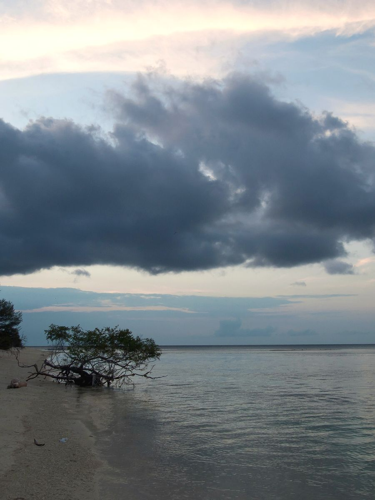
03 / 2 ночи
Гили Мено
Остров без автомобильного движения, практики у воды, снорклинг и добровольная цифровая пауза. Здесь маршрут становится проще, а внимание — тише.
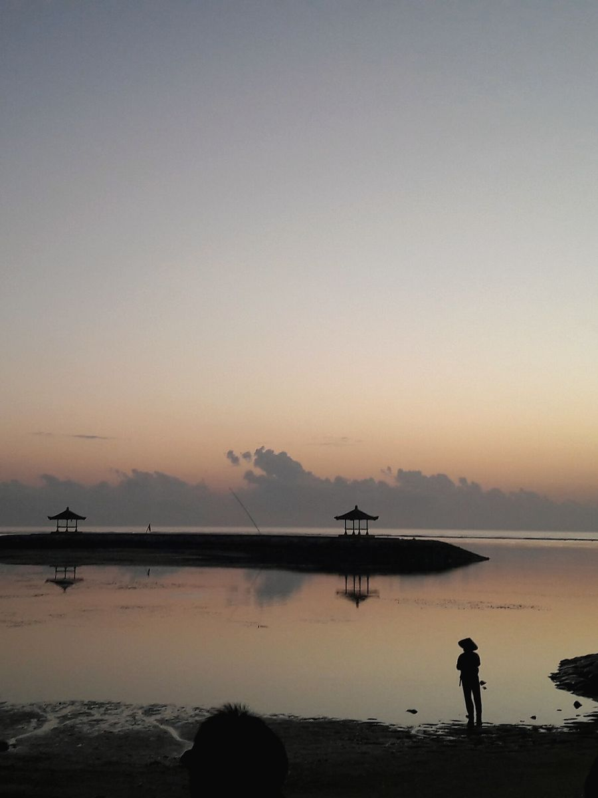
04 / 1 ночь
Санур
Мягкий переход к дороге домой: практика на песке, финальный круг и общий ужин у моря.
Интенсивность и последовательность меняются с учётом погоды, переездов и состояния группы. Практика следует за маршрутом, а не наоборот.
Утро
Цигун, йога, мобильность, дыхание и биомеханика движения. Утренний блок готовит тело к дороге, подъёмам и воде.
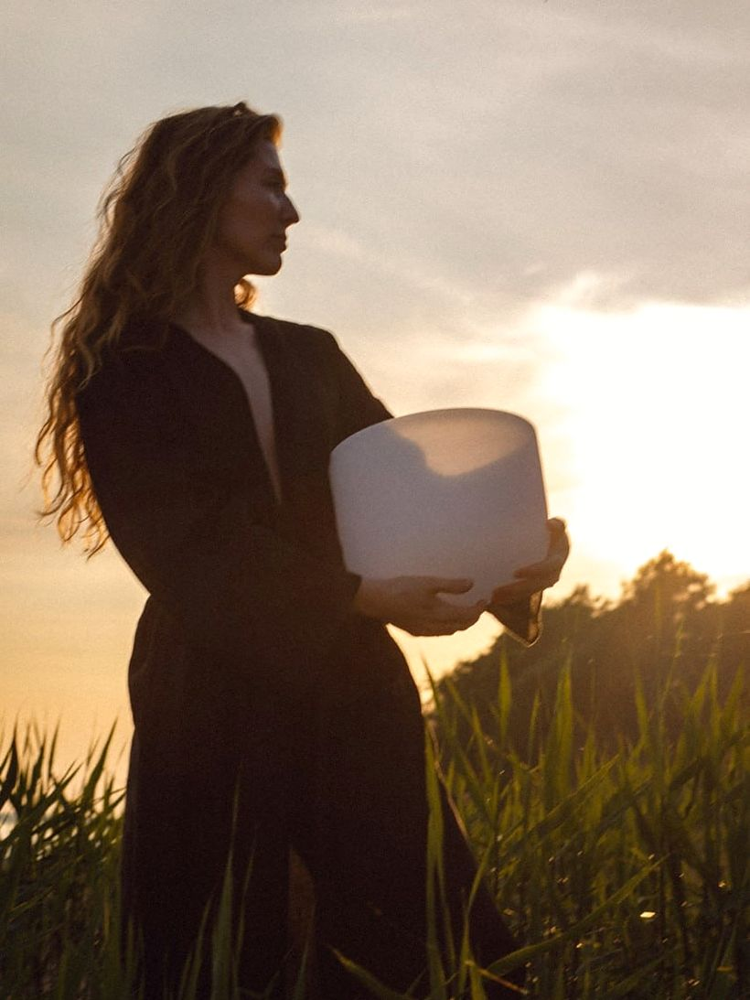
Вечер
Вечерние сессии помогают выйти из дневной нагрузки: медитация, йога-нидра, звук поющих чаш и лаборатории парного взаимодействия.
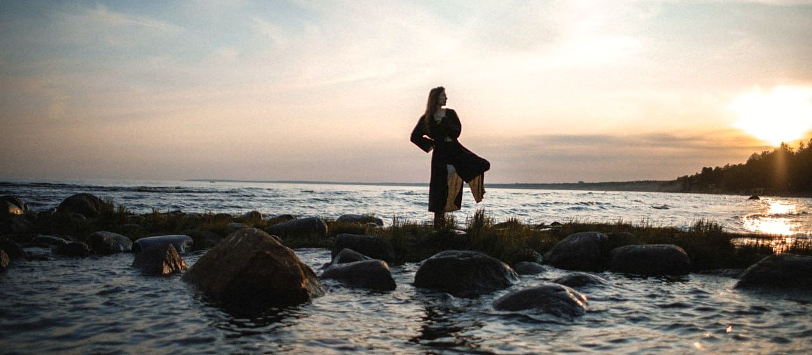
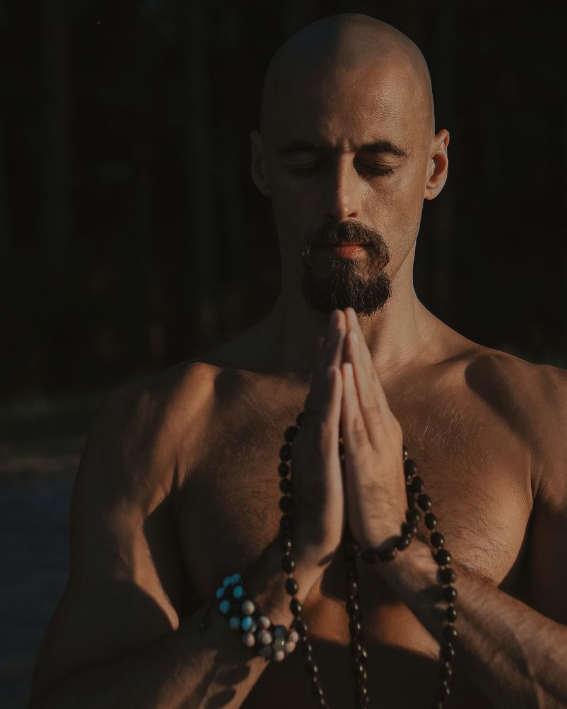
Движение и дыхание
Специализируется на реабилитации и биомеханике движения, преподаёт тайцзицюань и цигун. В программе отвечает за работу с осью тела, устойчивостью, мобильностью, дыханием и восстановлением после нагрузки.
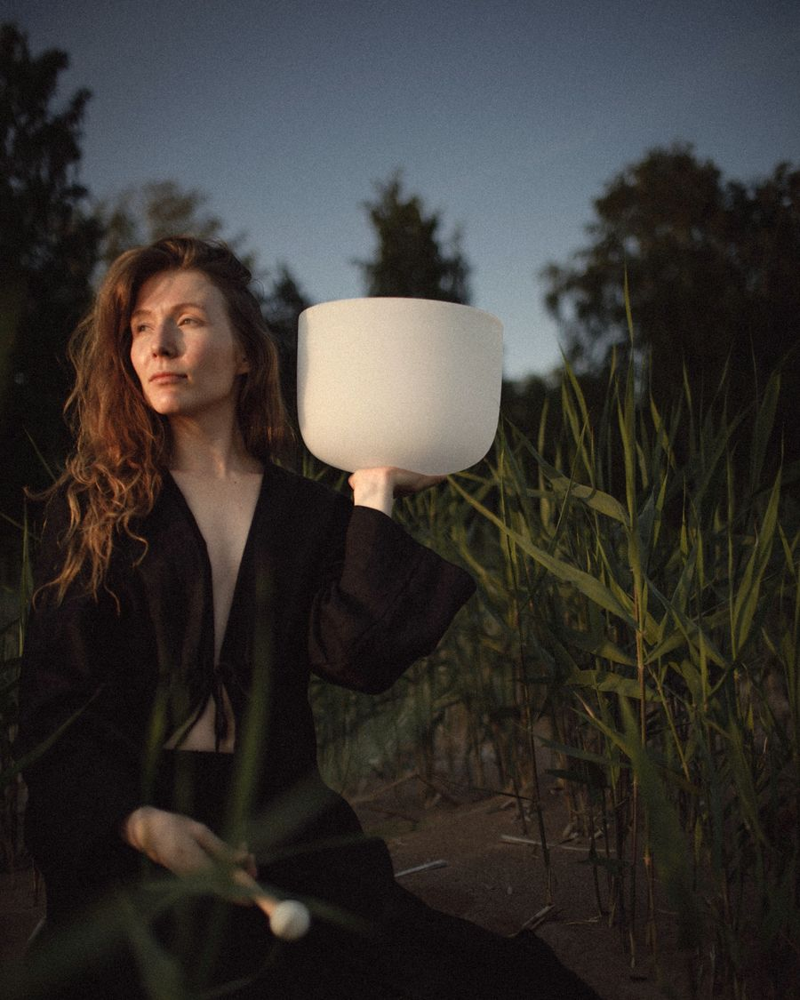
Звук и восстановление
Преподаёт мягкие стили йоги и йога-нидру, проводит звуковые медитации с поющими чашами. В программе отвечает за вечернее замедление, практики отдыха и акустические погружения.
Лаборатории парного взаимодействия
Через движение и внимание участники исследуют контакт, личные границы, невербальное доверие и свободную импровизацию. Любое взаимодействие строится на добровольности и возможности выбрать комфортный уровень участия.
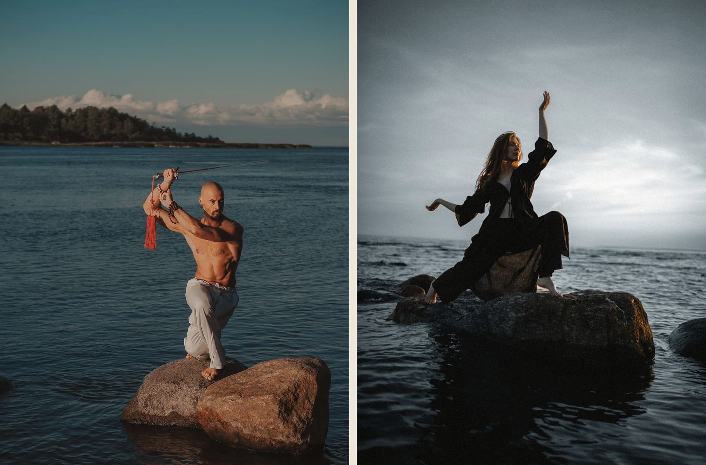
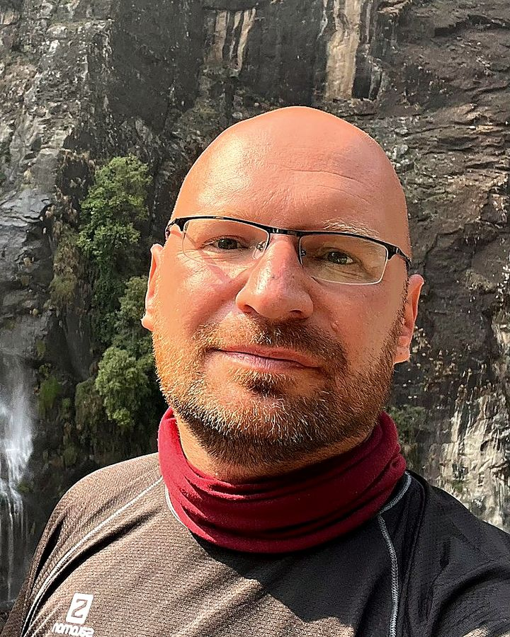
Организатор маршрута
20 лет организует путешествия и экспедиционные программы в Тибете, Патагонии, Японии, Индии и Китае. В этой поездке отвечает за логистику, размещение, связь с локальной командой, безопасность и форс-мажоры, чтобы участникам не приходилось решать организационные вопросы посреди маршрута.
Карта маршрута
Переезды собраны в четыре перегона. Между ними — время на месте, а не ежедневная смена отеля.
Полуостров Букит, юг Бали
Центральный Бали
Северный Ломбок
Восточное побережье Бали
Гили Мено административно относится к Северному Ломбоку, поэтому география маршрута — Бали и Гили Мено.
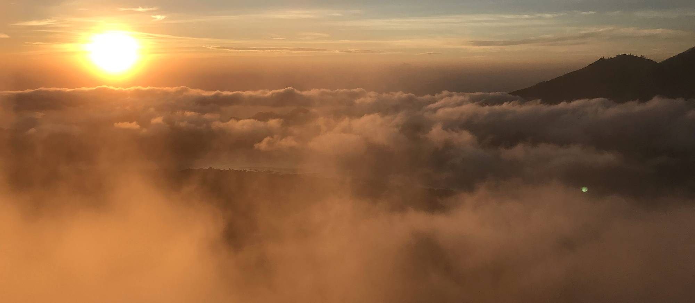
Батур, рассвет. День 5
Программа
Ниже — дневная канва маршрута. Полный почасовой график участники получают после бронирования.
Баланган
Встреча в аэропорту, трансфер на Баланган, заселение и отдых.
День
Встреча в аэропорту Денпасар, групповой трансфер на Баланган, заселение и отдых после перелёта.
Вечер
Знакомство группы, мягкая практика заземления и первое звуковое погружение в крытом пространстве.
Ночь: Баланган
Утренняя йога, океан, храм на утёсах и танец Kecak на закате.
Утро
Йога и дыхание у океана.
День
Океан и свободное время.
Закат
Храм Pura Luhur Uluwatu, прогулка по утёсам и танец Kecak.
Вечер
Свободное движение и медитация.
Ночь: Баланган
Убуд
Цигун перед дорогой, переезд в Убуд и первая лаборатория контакта.
Утро
Цигун, мобильность и даосский самомассаж перед дорогой.
День
Переезд в Убуд, обед и отдых.
Вечер
Первая лаборатория контакта: границы и умение слышать себя рядом с другими.
Ночь: Убуд
Мелукат в Pura Mengening и ранний отдых перед Батуром.
Утро
Практика цигун.
День
Мелукат в Pura Mengening в сопровождении местного балийского священнослужителя. Мы идём в храм как гости: с подношением, в саронге и по правилам площадки.
Вечер
Йога-нидра под хрустальные чаши и ранний отдых перед Батуром.
Ночь: Убуд
Ночной выезд к вулкану, рассвет на вершине и горячие источники.
Ночь
Выезд к вулкану затемно.
Рассвет
Встреча рассвета на вершине во время пешего трекинга или поездка на джипах. Вариант выбирается и подтверждается заранее.
День
Горячие источники, обед и дневной сон.
Вечер
Дыхание и медитация для восстановления.
Ночь: Убуд
Мягкое утро после нагрузки, отдых, массажи и вечерний слот в Dragonfly Village.
Утро
Мягкое дыхание, йога и вытяжение после нагрузки.
День
Отдых и массажи. Лекция принимающей стороны — тема и ведущий подтверждаются до старта.
Вечер
Закрытый групповой слот в Dragonfly Village: травяные бани и медленный вечер.
Ночь: Убуд
Джатилувих, система субак, храм Батукару и вторая лаборатория контакта.
Утро
Цигун и биомеханика движения.
День
Прогулка по рисовым террасам Джатилувих и знакомство с системой субак, культурный ландшафт которой включён в список UNESCO. Храм Pura Luhur Batukaru.
Вечер
Вторая лаборатория контакта и завершение убудского блока.
Ночь: Убуд
Гили Мено
Трансфер в Padang Bai, спидбот на Гили Мено и звук у воды на закате.
Утро
Практика мобильности перед дорогой.
День
Трансфер в Padang Bai, спидбот на Гили Мено, заселение и отдых у океана.
Закат
Мягкое движение и звуковая медитация у воды или в крытом пространстве.
Ночь: Гили Мено
Снорклинг к подводным скульптурам и черепахам, затем добровольная цифровая пауза.
Утро
Йога, баланс и настройка тела.
День
Снорклинг к подводным скульптурам и местам встречи морских черепах. Две лодки с сопровождением.
После воды
Добровольная цифровая пауза. Телефон организатора остаётся включённым для экстренной связи.
Вечер
Парная практика йоги.
Ночь: Гили Мено
Санур
Практика на песке, спидбот обратно и финальный круг у моря.
Утро
Функциональная практика на песке у воды.
День
Спидбот обратно на Бали и трансфер в Санур.
Вечер
Короткий интеграционный круг и общий ужин у моря.
Ночь: Санур
Неспешный завтрак, прогулка и групповые окна трансфера в аэропорт.
Утро
Неспешный завтрак и прогулка по берегу.
День
Групповые окна трансфера в аэропорт Денпасар.
Порядок практик и выездов может меняться из-за погоды, состояния моря и самочувствия группы.
08:00–09:30
Утренний блок движения и дыхания
09:30–10:30
Завтрак
10:30–17:00
Выезды, океан, отдых, переезды и обед
17:30–20:00
Медитация, движение, лаборатории контакта или звук
После 20:00
Ужин, свободное время и отдых
Ритм ориентировочный. Он может меняться из-за погоды, состояния моря, переездов и самочувствия группы.
Что вы увидите
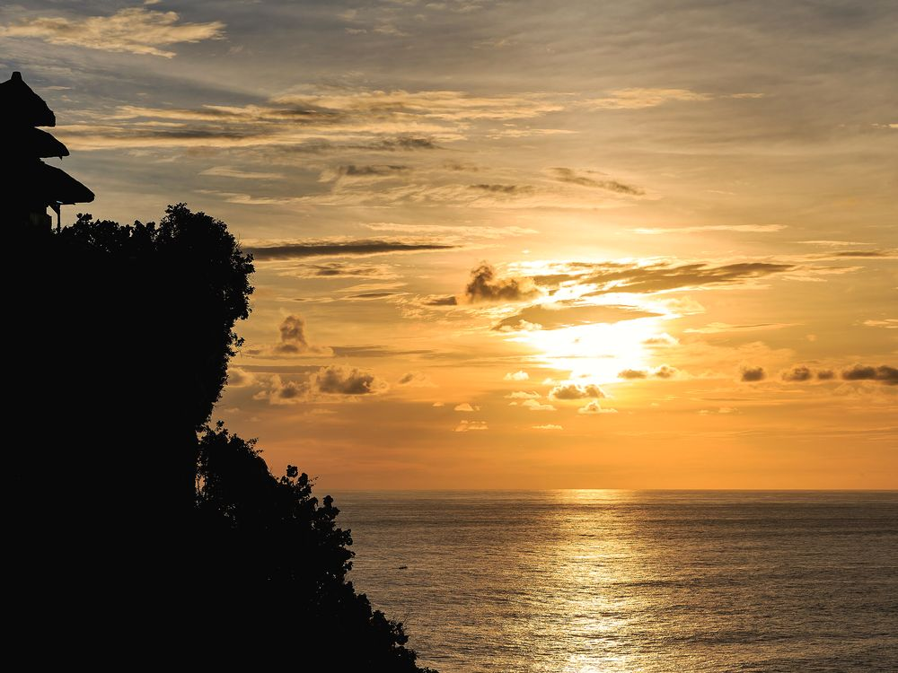
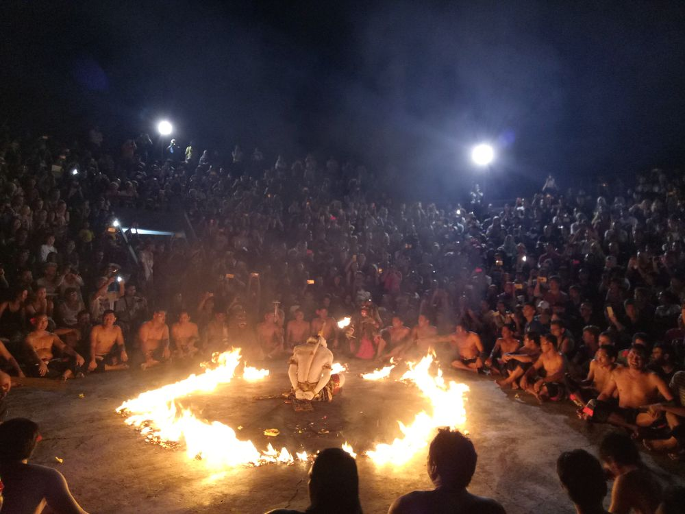
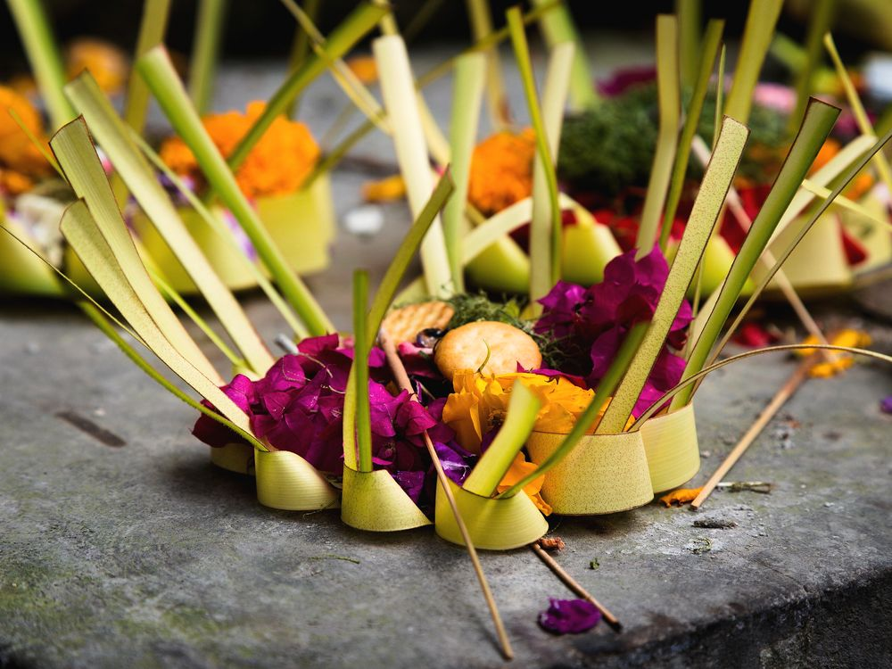
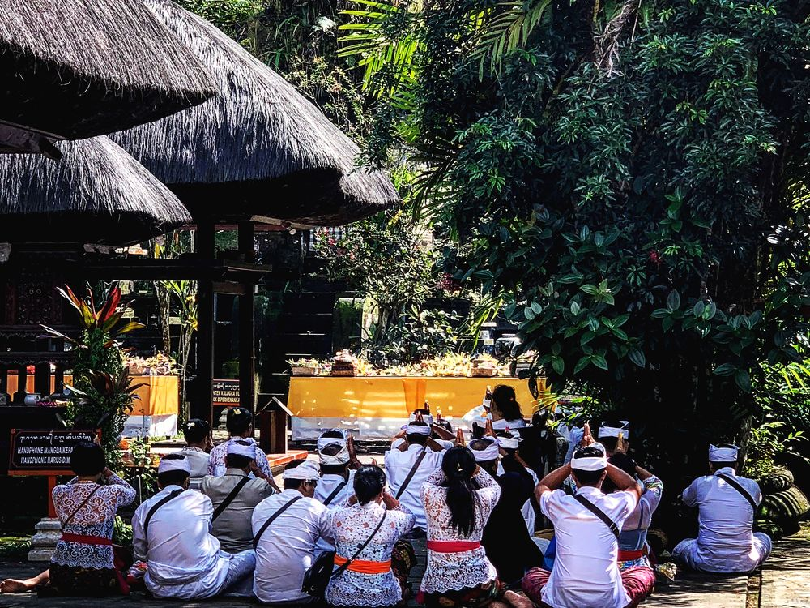
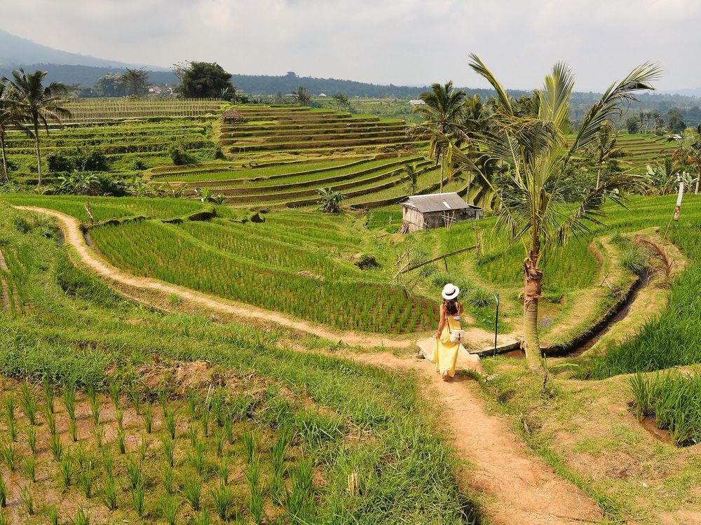
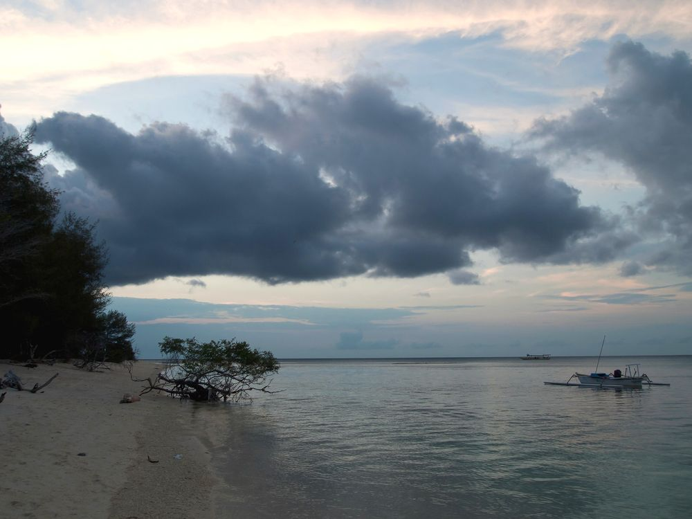
Пейзажи и культурные места маршрута. Кадры практик и группы появятся после собственной съёмки.
Размещение
Две главные точки маршрута забронированы: пять ночей в Убуде и две на Гили Мено. Баланган и Санур подтверждаются — ниже требования, по которым мы их выбираем.
5 ночей · 14–19 февраля
Бутик-вилла над рисовыми полями в стороне от центра. Бассейн с видом на долину, крытая беседка для утренних и вечерних практик, сад и общая кухня.
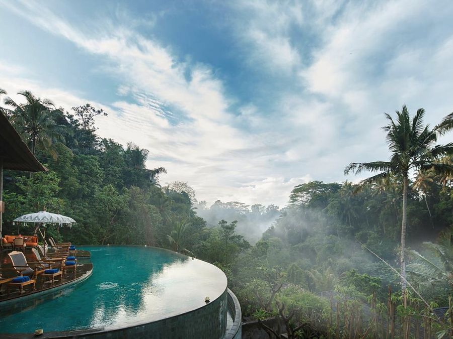
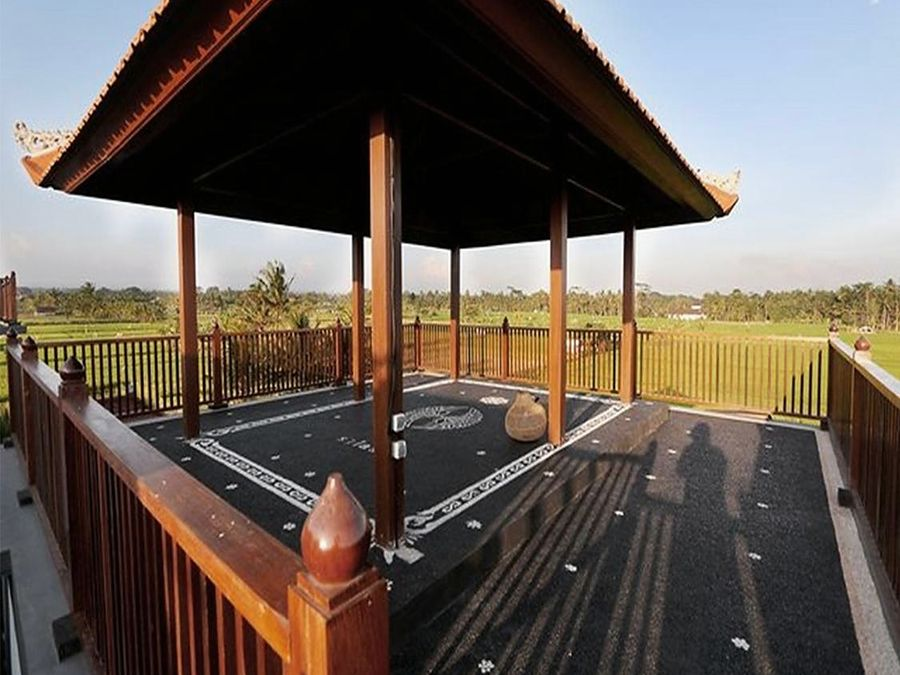
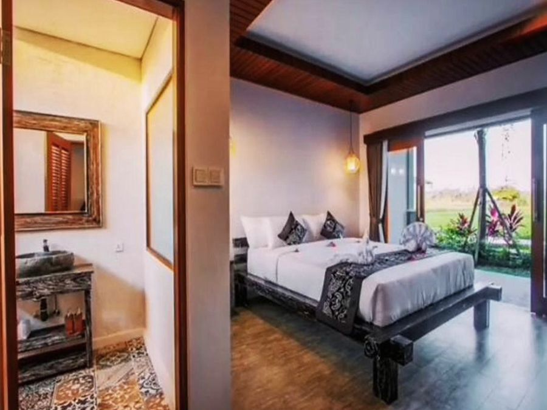
2 ночи · 19–21 февраля
Бунгало в кокосовой роще у белого песка. Общий бассейн двадцать метров, пространство для йоги, ресторан и выход к воде.
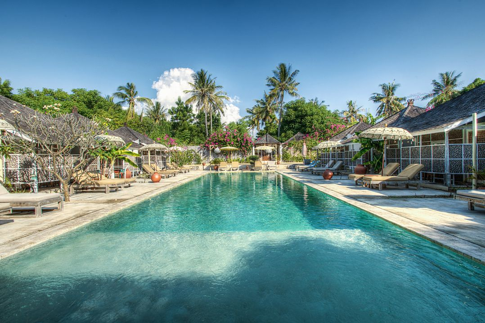
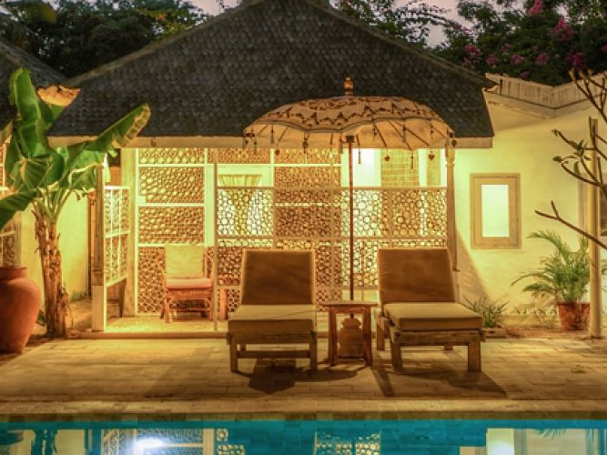
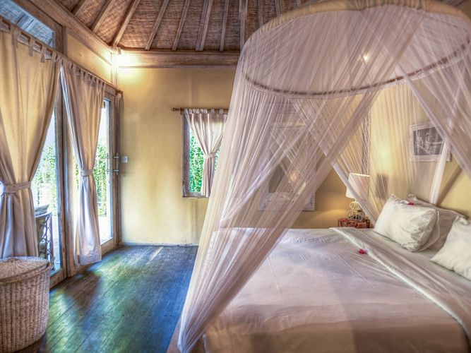
2 ночи · 12–14 февраля
1 ночь · 21–22 февраля
Тип размещения и принцип расселения подтверждаются до предоплаты. Фотографии предоставлены объектами.
Перелёт участники берут сами. Всё, что происходит после выхода из аэропорта, — наша забота.
12 февраля
Встречаем в аэропорту Денпасар (DPS) и везём на Баланган. Групповой трансфер входит в стоимость.
22 февраля
Групповые окна трансфера из Санура в аэропорт. Санур — в 30–40 минутах езды от терминала.
До и после
Если хотите прилететь раньше или остаться дольше, скажите в заявке — поможем с бронированием, это оплачивается отдельно.
Документы
Нужен загранпаспорт со сроком действия не меньше полугода на дату въезда и страховка на весь период. Визовые правила Индонезии меняются — актуальный порядок подтверждаем ближе к датам.
Точные окна трансфера публикуются после подтверждения отелей. Если рейс выпадает за их пределы, подскажем, как состыковаться.
Условия участия
В маршруте есть ночной подъём на Батур, неровные тропы, лодочные переходы, ранние практики и высокая влажность. Для Батура предусмотрен отдельный вариант на джипах — его нужно выбрать заранее. До оплаты участник сообщает об ограничениях по здоровью, а окончательное решение об участии в отдельных активностях принимает с учётом рекомендаций врача и местной команды.
Парные практики и цифровая пауза строятся на согласии. Участник может остановиться, выбрать наблюдение или адаптированный вариант. На время цифровой паузы у организатора остаётся работающий телефон для экстренной связи.
Стоимость
Стоимость, валюта, размер предоплаты и график платежей публикуются после подтверждения отелей и состава пакета. Мы присылаем полные условия до предоплаты.
Требования к опыту мы не публикуем, пока их не подтвердили Илья и Вита. Напишите в заявке, с чем вы приходите: какой опыт есть, что беспокоит в теле, чего хотите от поездки. Ответ будет про вас, а не общий.
Пеший подъём начинается ночью, тропа неровная, идти вверх примерно два часа. Нужна привычка к длительной ходьбе и устойчивость на спуске. Если это не ваш формат, есть вариант на джипах — его выбирают заранее.
Да. Пеший подъём и подъём на джипах различаются по времени, требованиям и стоимости, поэтому выбор подтверждается до поездки, а не утром на месте.
Базовый вариант — двухместные номера с раздельными кроватями. Одноместное размещение возможно за доплату, её размер публикуется вместе со стоимостью. Предпочтение по размещению можно указать прямо в заявке.
Питание по дням входит в программу, в день Батура предусмотрен ранний или упакованный приём пищи. Вегетарианские, веганские и безглютеновые запросы, а также аллергии мы собираем заранее и передаём отелям — напишите о них в анкете после первичного контакта.
Форма для практики, лёгкий дождевик, саронг и закрытые плечи для храма, купальник, солнцезащита без агрессивной химии для рифа, обувь с устойчивой подошвой для Батура и тёплый слой на ночной подъём. Полный список приходит после бронирования.
Перелёт участники берут сами. В день заезда мы встречаем в аэропорту Денпасар, в день вылета работают групповые окна трансфера из Санура. Если рейс выпадает за пределы окон, мы подскажем, как состыковаться.
Решение по лодкам и переездам принимает местная команда. Если море или погода не позволяют выйти, мы меняем порядок дня и переносим практику в защищённое пространство. Это заложено в маршрут заранее.
Нет. И то, и другое — по согласию. Можно остановиться в любой момент, выбрать наблюдение или адаптированный вариант. Телефон организатора во время цифровой паузы остаётся включённым.
Загранпаспорт со сроком действия не меньше полугода на дату въезда и медицинская страховка на весь период поездки. Визовые правила Индонезии меняются, поэтому актуальный порядок мы подтверждаем ближе к датам и присылаем участникам.
Они фиксируются в договоре и приходят полным текстом до предоплаты — вместе со стоимостью, графиком платежей и условиями возврата. Заявка ни к чему не обязывает.
Заявка ни к чему не обязывает. Мы свяжемся, ответим на вопросы и расскажем про размещение, нагрузку и условия бронирования. Медицинская анкета приходит позже, после первого разговора.